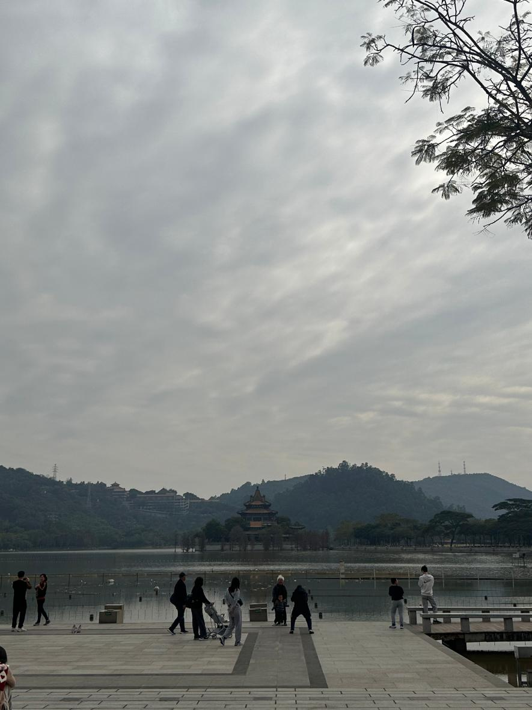
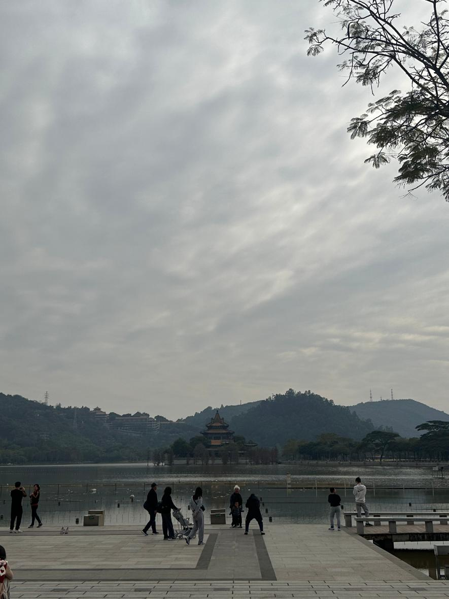
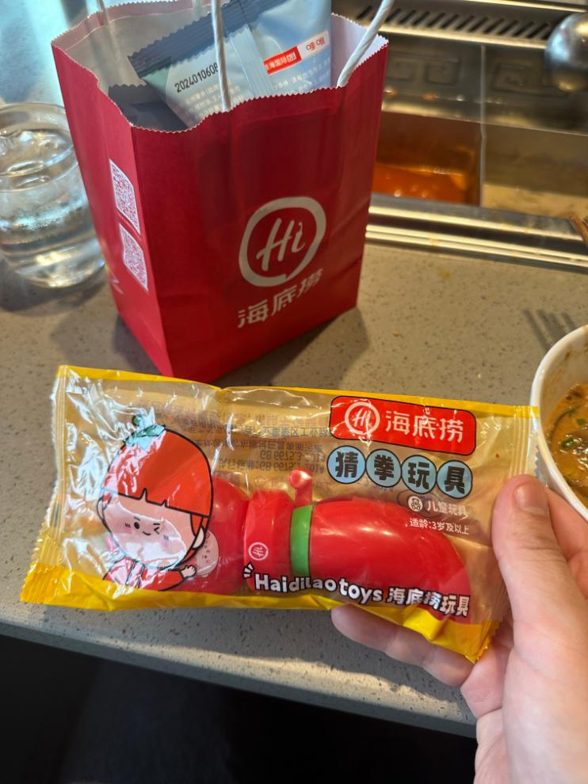
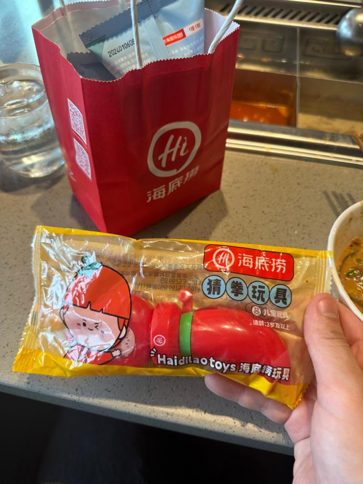

🐼 중국 여행
(2016년 ~ 현재)
📍 방문한 주요 장소
1. 顺峰山公园 - 순봉산공원
 

공간이 매우 넓어서 조깅이나 자전거 타기에 정말 좋다.
2. 沙面島 - 샤멘다오


유럽풍 건물이 조금 보였고,
산책하기에 조용하고 괜찮은 장소였다.
3. 北京路步行街

쇼핑몰이 밀집한 광장.
중국에서 처음 먹은 탕후루는 한국 것보다
과일 맛이 좀 더 진하고 신선하게 느껴졌다.
4. 佛山岭南天地


광저우에서 이렇게 관광객이 많은 곳은 처음이었다.
구경할 만한 상점들도 다양하게 많았다.
5. 广州东出口


패셔니스타와 젊음이 가득한 거리.
옷을 잘 입은 사람들이 많았고,
거리 촬영을 하는 모습도 자주 보였다.
6. 其他


차분하고 한적해서 좋다.
7. 和美術馆
유명한 건축가가 디자인한 건물이라고 들었는데,
세련된 건축미와 멋진 분위기가 인상적이었다.
1층에는 한국의 텐퍼센트 커피와
거의 흡사한 로고를 가진 유명한 커피집이 있는데,
그때는 땡기지 않아 먹지 않았지만 다음에 가면 꼭 들러봐야겠다.
🍖 음식 이야기
1. 海底捞火锅 - 하이디라오


 

한국에서 유명해서 호기심에 방문했다.
직원이 친절하게 설명해주고 소스도 추천해줘서 기분 좋았다.
맛도 좋았지만 가격은 다소 높은 편이었다.
📚 여행 수단 정리
✈️ 항공권
입국 (인천 -> 광저우)
| 구분 | 공항 | 시간 | 날짜 | 항공사 |
|---|---|---|---|---|
| 출발 | 인천국제공항 T1 | 08:30 | 2025년 7월 24일 | 아시아나항공 (OZ369) |
| 도착 | 바이윈국제공항 T1 | 11:15 |
출국 (광저우 -> 인천)
| 구분 | 공항 | 시간 | 날짜 | 항공사 |
|---|---|---|---|---|
| 출발 | 바이윈국제공항 T1 | 10:50 | 2025년 7월 28일 | 중국동방항공 (MU2818) |
| 도착 | 루커우국제공항 T2 | 13:10 | ||
| 출발 | 루커우국제공항 T2 | 15:25 | 2025년 7월 28일 | 중국동방항공 (MU2921) |
| 도착 | 인천국제공항 T1 | 18:30 |
입국 (베이징 -> 광저우)
| 구분 | 공항 | 시간 | 날짜 | 항공사 |
|---|---|---|---|---|
| 출발 | 수도국제공항 T2 | 16:30 | 2025년 1월 9일 | 하이난항공 (HU7811) |
| 도착 | 바이윈국제공항 T1 | 19:45 |
출국 (광저우 -> 인천)
| 구분 | 공항 | 시간 | 날짜 | 항공사 |
|---|---|---|---|---|
| 출발 | 바이윈국제공항 T2 | 10:40 | 2025년 1월 19일 | 중국남방항공 (CZ3061) |
| 도착 | 인천국제공항 T1 | 15:15 |
🛌 호텔
X
📙 기타 정보
1. 준비물 (2025-01-04 기준)
- Alipay - 중국 결제어플. 현찰 쓸 일이 아예 없음. 모두 QR로 결제
- DiDi - 중국 택시어플. 택시비가 저렴해서 자주 타기 좋음
- 고덕지도(高德地图) - 중국 지도어플. 다른 나라와 다르게 구글지도가 되지 않음. 중국 현지어플을 써야함.
- eSIM
- VPN - eSIM에 VPN이 포함되어 있지만, 현지 호텔 와이파이에서는 제대로 작동되지 않았음